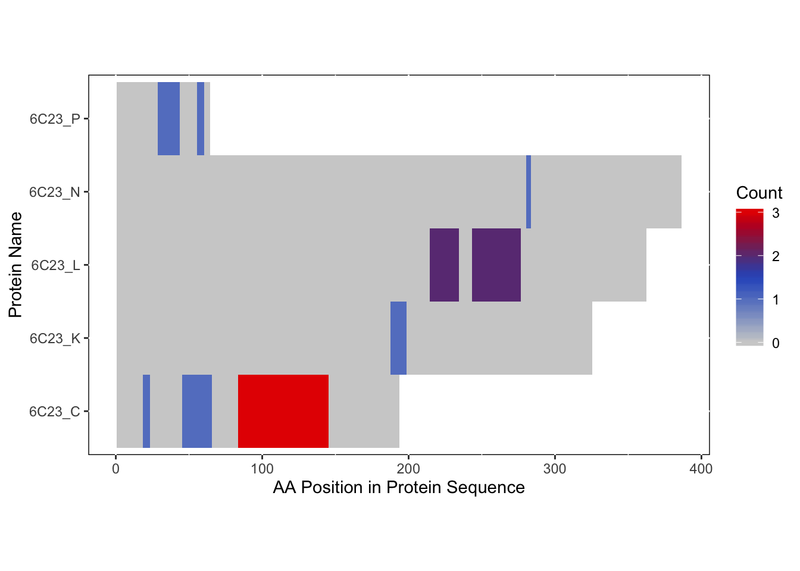

Combining RBDmap and XL-MS Data for Visualization
Emma Gail
2019-10-22
Introduction
In this tutorial, we will combine XL-MS and RBDmap experimental data in order to show a more complete picture of the interactions occuring on our protein complex of interest, PRC2. For this demonstration, we will data that we initially process using these tutorials.
Install crisscrosslinkeR
If you have not done so already, please install crisscrosslinkeR:
library(devtools)
install_github('egmg726/crisscrosslinker')Load Library
library(crisscrosslinker)Load the Data
For convenience, the processed data for this workflow has been incorporated into crisscrosslinker. We will be using the following datasets:
RBDmap
bs_output_repeats_pdbbs_output_repeats_uniprot
XL-MS
xlink.df.filt.pdbxlink.df.uniprot
For the details on how to process this data, please refer to the XL-MS and RBDmap workflows.
Viewing XL-MS and RBDmap Data with xiNET
In order to visualize both the protein-protein and protein-RNA interactions on the same 2D image, we can use the web server xiNET. While xiNET does not explicitly show protein-RNA interactions, we can add them to the image through formatting our data as an annotation file. For more information about what the annotation file is composed of, see the xiNET documentation here.
XL-MS Data for xiNET
We can first make the file for xiNET from the protein-protein interaction data.
ppi.xinet(xlink.df.uniprot, write_file = TRUE)RBDmap Data for xiNET
Since protein-RNA interactions have been identified as peptides, we can create a file for them for import into xiNET that can be classified as domains. We can see how this would look like by first looking at the heatmap:
#bs_output_repeats_uniprot_freqvector <- rbd.freqVector(bs_output_repeats_uniprot)
bs_repeats_freqVector <- rbd.freqVector(bs_output = bs_output_repeats_uniprot,
name_by = 'pro_name',
db_selection = 'UniProt',
heatmap = TRUE)## Saving 7 x 5 in image
We want to be able to take the information that is on this heatmap and combine it with the protein-protein interaction data to look at it on one image.
The protein names between the XL-MS and RBDmap experiments should be consistent to ensure that they will be matched appropriately to each bar in xiNET.
rbd.xinet(bs_output_repeats_uniprot,write.file = TRUE)This function will produce an annotation file with the same default colors used for the heatmap above (For more information about what the annotation file is composed of, see the xiNET documentation here. By combining this annotation file with the protein-protein interaction data from the XL-MS, you will be able to view both on the same image.
Once you retrieve the output from xiNET, you should get something like this:
 }
}
Combination on PDB Structure (PyMOL)
In this instance, we will use the “Blues” palette to denote RBDmap domains and red to designate XL-MS data.
rbd_pymol_lines <- rbd.pymol(bs_output_repeats_pdb2, color_by='freq', write.file = FALSE, colors = c('#d0d0d0','#2f5ac6','#e50000'))## Saving 7 x 5 in image
## HEADER GENE REGULATION 05-JAN-18 6C23
## HEADER GENE REGULATION 05-JAN-18 6C23
## HEADER GENE REGULATION 05-JAN-18 6C23
## HEADER GENE REGULATION 05-JAN-18 6C23
## HEADER GENE REGULATION 05-JAN-18 6C23#xlink.df.filt.pdb$freq_color <- rep('#34978F',nrow(xlink.df.filt.pdb)) #making all crosslinks red for visibility
ppi_pymol_lines <- ppi.pymol(xlink.df.filt.pdb,colors='#34978F')
final_pymol <- c(rbd_pymol_lines,ppi_pymol_lines) #remove "fetch" and "color gray" commands from PPI
#ppi_pymol_lines <- gsub('custom_color_1','custom_color_9',ppi_pymol_lines)
#PyMOL file
write(paste((final_pymol),collapse = '\n'),'combined_pymol2.pml')We can then view the resulting .pml file within PyMOL to be able to visualize it. To open a pml file with PyMol either double-click on it or refer to the PyMol manual.

Session Info
devtools::session_info()## ─ Session info ──────────────────────────────────────────────────────────
## setting value
## version R version 3.6.1 (2019-07-05)
## os macOS Mojave 10.14.3
## system x86_64, darwin15.6.0
## ui X11
## language (EN)
## collate en_US.UTF-8
## ctype en_US.UTF-8
## tz Australia/Melbourne
## date 2019-10-22
##
## ─ Packages ──────────────────────────────────────────────────────────────
## package * version date lib
## ade4 1.7-13 2018-08-31 [1]
## assertthat 0.2.1 2019-03-21 [1]
## backports 1.1.5 2019-10-02 [1]
## bio3d 2.3-4 2018-04-03 [1]
## BiocGenerics 0.30.0 2019-05-02 [1]
## Biostrings 2.52.0 2019-05-02 [1]
## callr 3.3.2 2019-09-22 [1]
## cli 1.1.0 2019-03-19 [1]
## colorspace 1.4-1 2019-03-18 [1]
## crayon 1.3.4 2017-09-16 [1]
## crisscrosslinker * 0.9 2019-10-22 [1]
## desc 1.2.0 2018-05-01 [1]
## devtools 2.2.1 2019-09-24 [1]
## digest 0.6.22 2019-10-21 [1]
## dplyr 0.8.3 2019-07-04 [1]
## ellipsis 0.3.0 2019-09-20 [1]
## evaluate 0.14 2019-05-28 [1]
## fs 1.3.1 2019-05-06 [1]
## gdtools * 0.2.1 2019-10-14 [1]
## ggplot2 3.2.1 2019-08-10 [1]
## glue 1.3.1 2019-03-12 [1]
## gridExtra 2.3 2017-09-09 [1]
## gtable 0.3.0 2019-03-25 [1]
## htmltools 0.4.0 2019-10-04 [1]
## httr 1.4.1 2019-08-05 [1]
## IRanges 2.18.3 2019-09-24 [1]
## jsonlite 1.6 2018-12-07 [1]
## knitr 1.25 2019-09-18 [1]
## labeling 0.3 2014-08-23 [1]
## lattice 0.20-38 2018-11-04 [1]
## lava 1.6.6 2019-08-01 [1]
## lazyeval 0.2.2 2019-03-15 [1]
## magrittr 1.5 2014-11-22 [1]
## MASS 7.3-51.4 2019-03-31 [1]
## Matrix 1.2-17 2019-03-22 [1]
## memoise 1.1.0 2017-04-21 [1]
## munsell 0.5.0 2018-06-12 [1]
## openxlsx 4.1.0.1 2019-05-28 [1]
## pillar 1.4.2 2019-06-29 [1]
## pkgbuild 1.0.6 2019-10-09 [1]
## pkgconfig 2.0.3 2019-09-22 [1]
## pkgload 1.0.2 2018-10-29 [1]
## prettyunits 1.0.2 2015-07-13 [1]
## processx 3.4.1 2019-07-18 [1]
## prodlim 2018.04.18 2018-04-18 [1]
## ps 1.3.0 2018-12-21 [1]
## purrr 0.3.2 2019-03-15 [1]
## R6 2.4.0 2019-02-14 [1]
## RColorBrewer 1.1-2 2014-12-07 [1]
## Rcpp 1.0.2 2019-07-25 [1]
## remotes 2.1.0 2019-06-24 [1]
## rlang 0.4.0 2019-06-25 [1]
## rmarkdown 1.16 2019-10-01 [1]
## rprojroot 1.3-2 2018-01-03 [1]
## S4Vectors 0.22.1 2019-09-09 [1]
## scales 1.0.0 2018-08-09 [1]
## seqinr 3.6-1 2019-09-07 [1]
## sessioninfo 1.1.1 2018-11-05 [1]
## stringi 1.4.3 2019-03-12 [1]
## stringr 1.4.0 2019-02-10 [1]
## survival 2.44-1.1 2019-04-01 [1]
## svglite 1.2.2 2019-05-17 [1]
## systemfonts 0.1.1 2019-07-01 [1]
## testthat 2.2.1 2019-07-25 [1]
## tibble 2.1.3 2019-06-06 [1]
## tidyselect 0.2.5 2018-10-11 [1]
## usethis 1.5.1 2019-07-04 [1]
## viridis 0.5.1 2018-03-29 [1]
## viridisLite 0.3.0 2018-02-01 [1]
## withr 2.1.2 2018-03-15 [1]
## xfun 0.10 2019-10-01 [1]
## xml2 1.2.2 2019-08-09 [1]
## XVector 0.24.0 2019-05-02 [1]
## yaml 2.2.0 2018-07-25 [1]
## zip 2.0.4 2019-09-01 [1]
## zlibbioc 1.30.0 2019-05-02 [1]
## source
## CRAN (R 3.6.0)
## CRAN (R 3.6.0)
## CRAN (R 3.6.0)
## CRAN (R 3.6.0)
## Bioconductor
## Bioconductor
## CRAN (R 3.6.0)
## CRAN (R 3.6.0)
## CRAN (R 3.6.0)
## CRAN (R 3.6.0)
## Github (egmg726/crisscrosslinker@9729555)
## CRAN (R 3.6.0)
## CRAN (R 3.6.0)
## CRAN (R 3.6.1)
## CRAN (R 3.6.0)
## CRAN (R 3.6.0)
## CRAN (R 3.6.0)
## CRAN (R 3.6.0)
## CRAN (R 3.6.0)
## CRAN (R 3.6.0)
## CRAN (R 3.6.0)
## CRAN (R 3.6.0)
## CRAN (R 3.6.0)
## CRAN (R 3.6.0)
## CRAN (R 3.6.0)
## Bioconductor
## CRAN (R 3.6.0)
## CRAN (R 3.6.0)
## CRAN (R 3.6.0)
## CRAN (R 3.6.1)
## CRAN (R 3.6.0)
## CRAN (R 3.6.0)
## CRAN (R 3.6.0)
## CRAN (R 3.6.1)
## CRAN (R 3.6.1)
## CRAN (R 3.6.0)
## CRAN (R 3.6.0)
## CRAN (R 3.6.0)
## CRAN (R 3.6.0)
## CRAN (R 3.6.0)
## CRAN (R 3.6.0)
## CRAN (R 3.6.0)
## CRAN (R 3.6.0)
## CRAN (R 3.6.0)
## CRAN (R 3.6.0)
## CRAN (R 3.6.0)
## CRAN (R 3.6.0)
## CRAN (R 3.6.0)
## CRAN (R 3.6.0)
## CRAN (R 3.6.0)
## CRAN (R 3.6.0)
## CRAN (R 3.6.0)
## CRAN (R 3.6.0)
## CRAN (R 3.6.0)
## Bioconductor
## CRAN (R 3.6.0)
## CRAN (R 3.6.0)
## CRAN (R 3.6.0)
## CRAN (R 3.6.0)
## CRAN (R 3.6.0)
## CRAN (R 3.6.1)
## CRAN (R 3.6.0)
## CRAN (R 3.6.0)
## CRAN (R 3.6.0)
## CRAN (R 3.6.0)
## CRAN (R 3.6.0)
## CRAN (R 3.6.0)
## CRAN (R 3.6.0)
## CRAN (R 3.6.0)
## CRAN (R 3.6.0)
## CRAN (R 3.6.0)
## CRAN (R 3.6.0)
## Bioconductor
## CRAN (R 3.6.0)
## CRAN (R 3.6.0)
## Bioconductor
##
## [1] /Library/Frameworks/R.framework/Versions/3.6/Resources/library